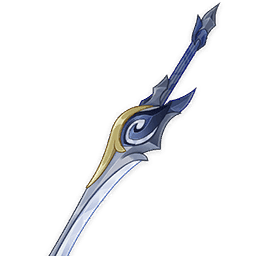
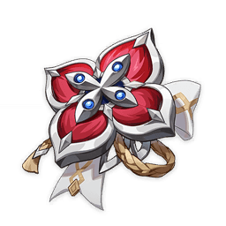
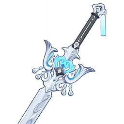
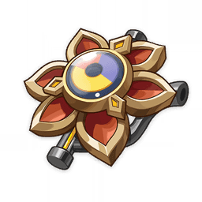
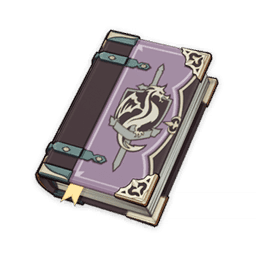
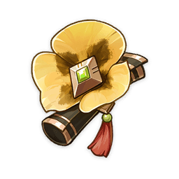
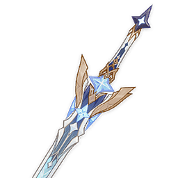
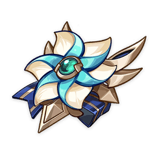

Vesna Vodyanitsa


Emberwell★★★★ ATT base510 Maestria Elementale165 Fuoco stellare sulla neve (R5): innescare una reazione elementale aumenta l'ATT del 32% per 12s; innescare un Barlume astrale aumenta i DAN da Barlume astrale del 32% per 12s. Attivo anche fuori campo.
Scarlet Proof 2pz: ATT +18%.4pz: per 10s dopo un Turbinio astrale, Tasso di CRIT +16% e DAN da Turbinio astrale +40%. Vesna

Silver Light ATT base510 ATT41.3% Chiarore sull'acqua (R5): usare l'Abilità Elementale aumenta la Maestria Elementale di 104 per 12s. Massimo 2 cariche, ciascuna con durata indipendente.
Heart of the Furnace 2pz: ATT +18%.4pz: ATT +12% per 12s dopo un Barlume astrale; DAN da Barlume astrale dei compagni vicini +50%. Odette


Thrilling Tales of Dragon Slayers★★★ ATT base401 PS35.2% Eredità (R5): al cambio personaggio, il nuovo in campo riceve ATT +48% per 10s. Una volta ogni 20s.
Tenacity of the Millelith 2pz: PS +20%.4pz: colpire con l'Abilità Elementale aumenta ATT e efficacia dello scudo del party vicino rispettivamente del 20% e del 30% per 3s. Vodyanitsa
C2

Exaiphanes Blade★★★★★ ATT base608 Tasso di CRIT33.1% Cammino della Viaggiatrice (R1): quando equipaggiata dalla Viaggiatrice, ATT +16% per 8s dopo un colpo, energia +3. Una volta ogni 5s, anche fuori campo.
A Day Carved From Rising Winds 2pz: ATT +18%.4pz: dopo un colpo, ATT +25% per 6s; con "Compiti della strega" completati, anche Tasso di CRIT +20%. Traveler
- Total DMG
- 3.378.662
- Team DPS (19.5s)
- 173.265
Odette EE > CMC ECQ > Vodyanitsa E > Vesna 3E N3CE QE N3CE